Color Cozy Places
Learn to color stone walls, water, roofs, wood and sky with colored pencils – in three clear levels, on real cozy scenes.
View on Amazon- 102 pages
- 8.5 x 11 inch paperback
- Coloring pages printed on one side
- For colored pencils
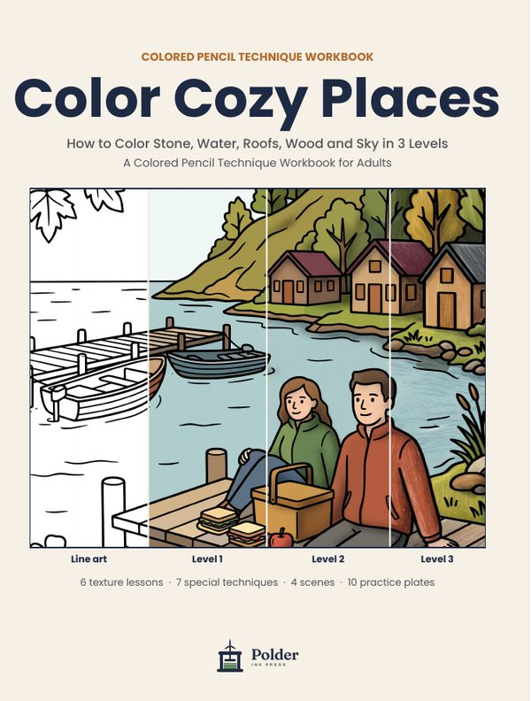
Every page in three levels
Stop at any level and you still have a lovely page. Tap the buttons to see how one scene builds up.
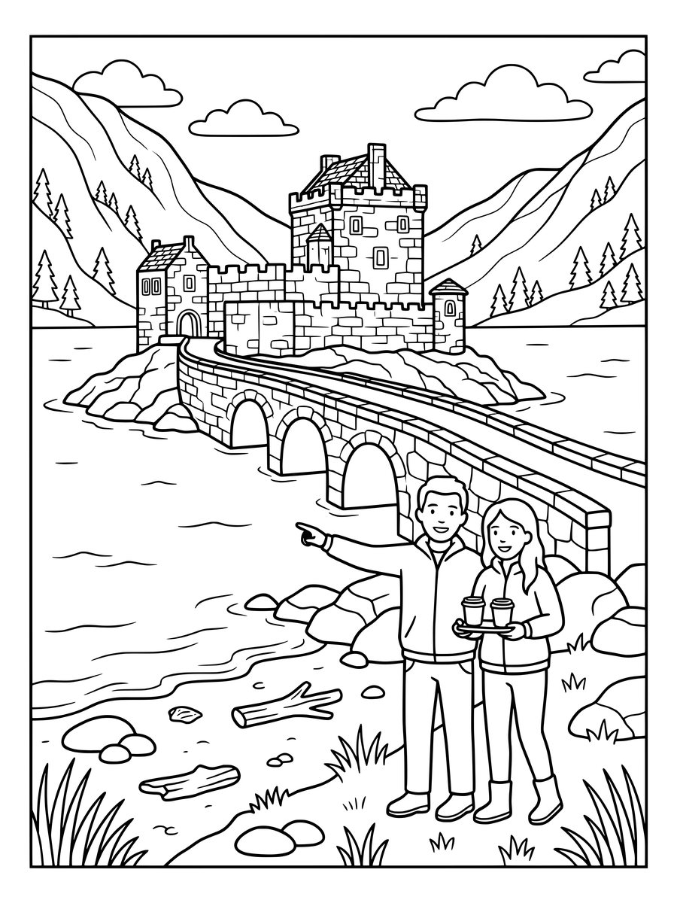
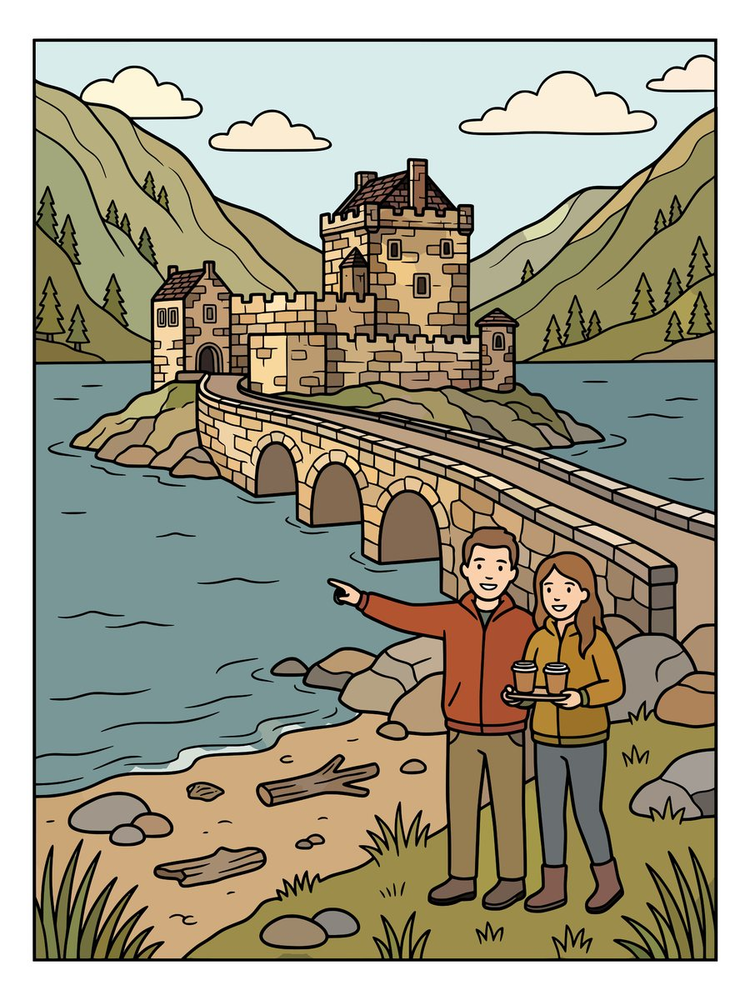
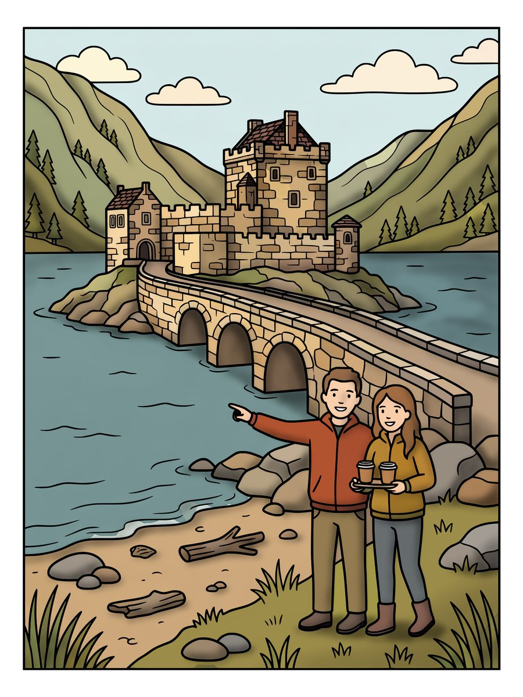
- Level 1 – Base colors
- Choose a small palette and fill every area evenly with light pressure.
- Level 2 – Shading
- Pick where the light comes from and darken what faces away from it – with deeper colors, not black.
- Level 3 – Texture and highlights
- Add the look of stone, wood, water and sky, and bring back the light.
What you'll learn
Everything in the book at a glance: the basics, the three levels, 13 lessons, 4 complete scenes and 10 practice plates.
Before You Start
- What you need
- Holding your pencil: grip and angle
- Pressure and strokes
- Color basics: the color wheel, warm and cool, choosing shadow colors
- Light comes from one side
- Building up in layers
- Blending and highlights
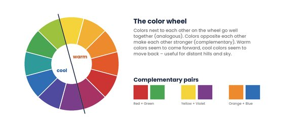
The three levels
Each level has its own chapter with examples and practice close-ups.
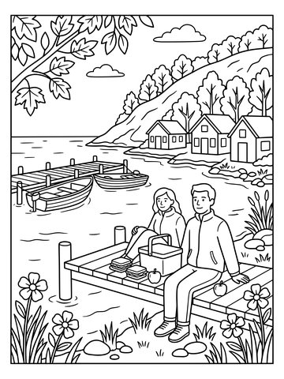
Line art
where you start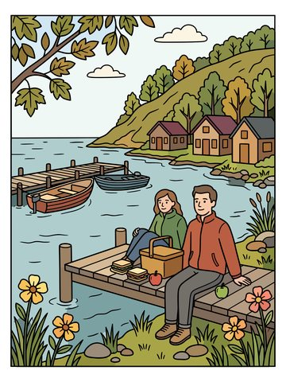
Level 1
base colors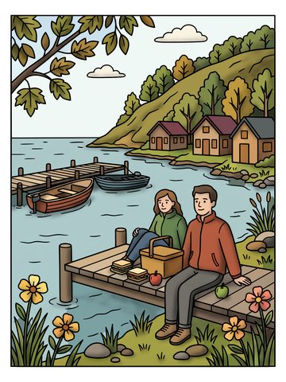
Level 2
shading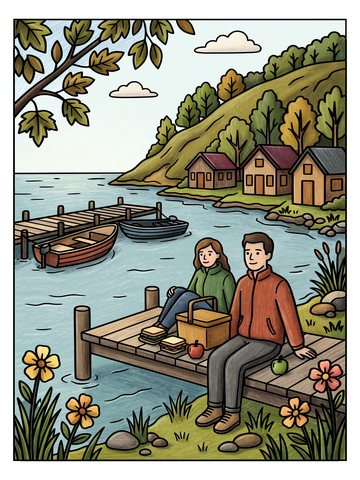
Level 3
texture and highlights6 texture lessons
The surfaces you meet in almost every cozy scene – each with a practice page.
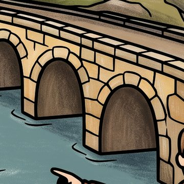
Stone Walls
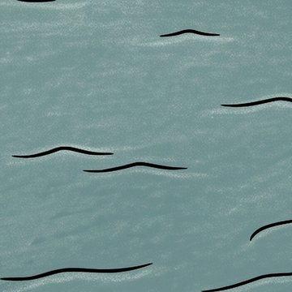
Water
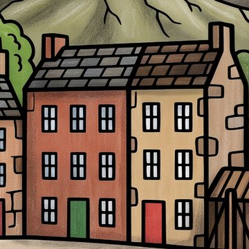
Roofs and Walls
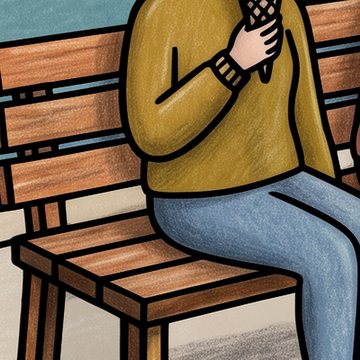
Wooden Boards
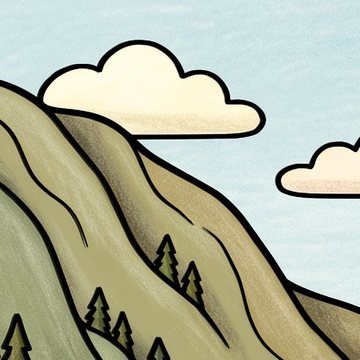
Sky and Clouds
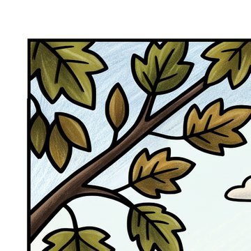
Leaves and Trees
7 special techniques
Light, seasons and special effects – each with a practice page.
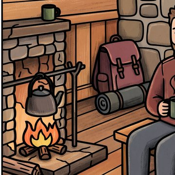
Glowing Light
Windows, lanterns and a crackling fire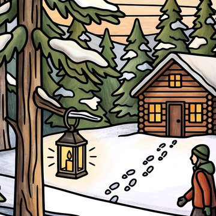
Snow and Winter
White paper, blue shadows and frosty trees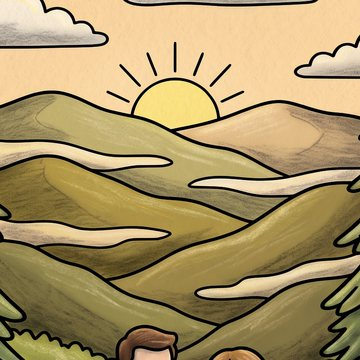
Depth in Landscapes
Hills that fade into the distance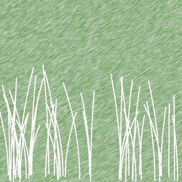
Impressed Lines
White lines for ropes, grass and ripples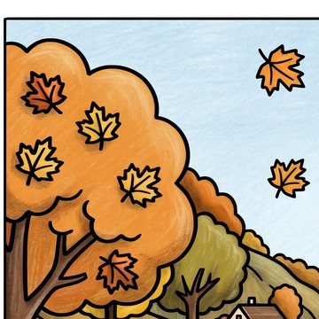
Autumn Leaves and Flowers
Warm colors that glow and blend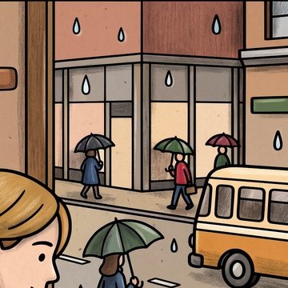
Glass and Metal
Windows, rain and shiny lanterns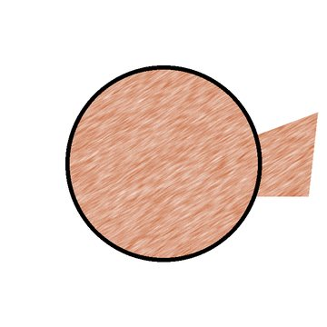
Fixing Mistakes
Lift color, soften edges, start again4 scenes from start to finish
Follow a complete scene through all three levels, then color it yourself.
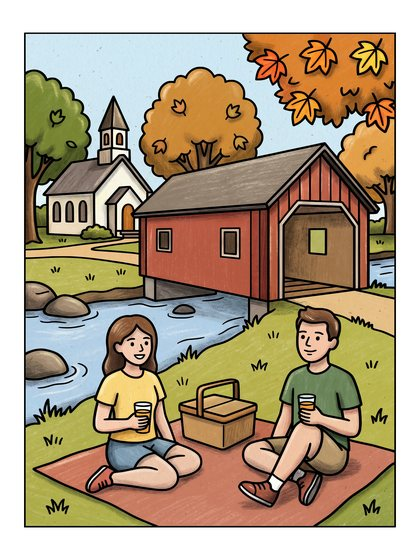
Covered Bridge Picnic
West Arlington, Vermont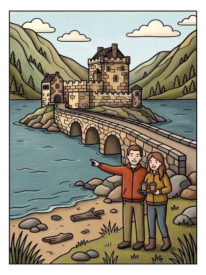
Eilean Donan Castle
Loch Duich, Scotland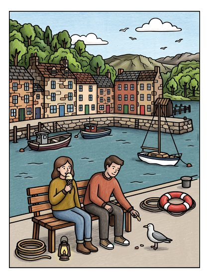
Tobermory Harbor
Isle of Mull, Scotland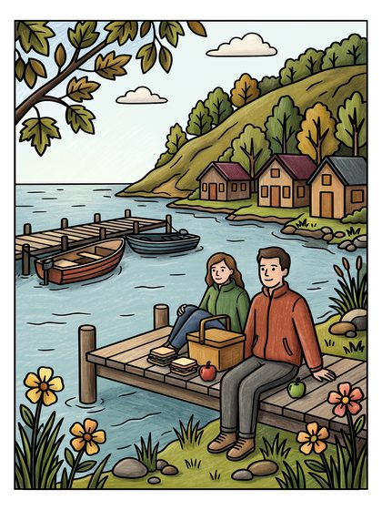
Copper Harbor
Keweenaw Peninsula, Michigan10 practice plates
One plate from each of our coloring books, each with its own page of tips: which grip to use where, what to do in each level and which lessons to look back at. Tap a plate to see the full book.
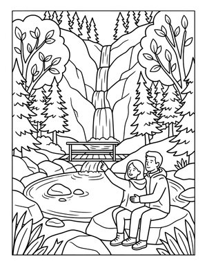
Moss Glen Falls
from Cozy Vermont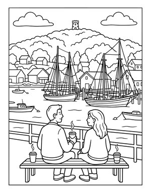
Camden Harbor
from Cozy Maine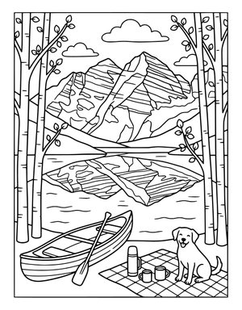
Maroon Bells
from Cozy Colorado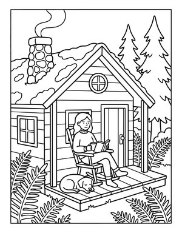
Forest Cabin
from Cozy Oregon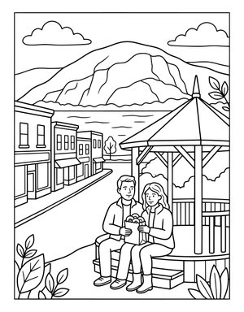
Cold Spring
from Cozy New York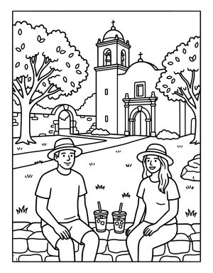
Mission San Jose
from Cozy Texas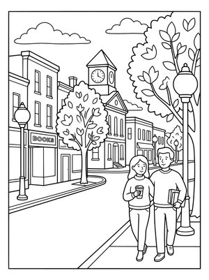
Jonesborough
from Cozy Tennessee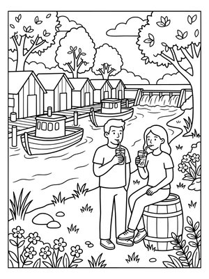
Leland
from Cozy Michigan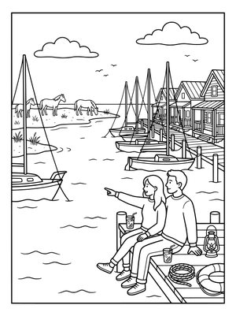
Beaufort
from Cozy North Carolina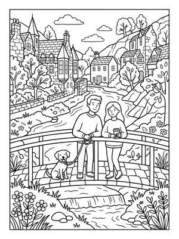
Dean Village
from Cozy ScotlandQuestions
Which pencils do I need?
Any set of 24 or more colored pencils works, including a white pencil. A sharpener and a soft eraser are useful too.
Can I use markers?
The book is written for colored pencils. Markers work for the base colors, but always put a sheet of scrap paper under the page: markers can bleed through and blend less smoothly on this paper.
Is this a coloring book or a workbook?
A workbook: short lessons with examples and practice close-ups, plus 4 complete scenes and 10 practice plates to color. For more pages to color, see our Cozy States and Cozy Journeys coloring books.
Are the pages single-sided?
All pages meant for coloring are printed on one side only.
How were the examples made?
The illustrations and color examples were created digitally with the help of AI tools and edited by us. They show each step clearly; your colored pencils will give a softer, more textured result.
The color examples in this book are digital demonstrations made with the help of AI tools.